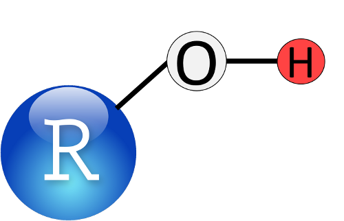

The Worst Stats Text eveR
The Worst Stats Text eveR
Dan Stich, PhD
Biology Department and Biological Field Station, SUNY Oneonta

Unskillful representation of an alcohol molecule where -OH is the functional group and R is the radical group, or “rest of the molecule”, much like it is to modern statistics. This is funny, because R is a “functional” programming language that will drive you to drink (or perhaps undertake some other, healthier stress-reducing activity). Don’t worry, I’ll explain all of the jokes, and most of the code as we go, because this
is The Worst Stats Text eveR.